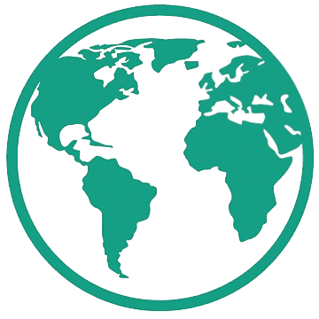

We chose to make a city in South Africa because of its sunny climate. Due to South Africa’s sunny climate we were able to reduce electricity costs. We did this by increasing the amount of windows and solar panels to bring in natural light when the sun’s up. After sunset, we use the energy gathered from the solar panels to have lighting. We chose the southern part of South Africa to allow for farming to sustain the community.
Frequently Asked Questions About SA Eco City
Where Are You Placing Those Industries?
The industries are being placed to the east of the highway because that’s a dedicated area for industry. The reason we made east of the highway all industry is so we can create a barrier for the pollution and allow easy access to the highway.
How Will They Operate?
They will operate by importing stuff from other cities using the highway system created to make goods to transport to the shops to be sold to the citizens of the city and to be exported.
Why Did You Make Those Choices?
The reason we made these choices is to keep pollution away from the residential areas and give easy access to the highway to facilitate trade between cities.
What Base Industries Will Make Up Your Economic Base?
The base industry that will make up the economic base is the steel industry.
What Non-basic Industries Will Your Community Have?
The non-basic industry the community is going to have is the shops within the residential community bordering the highway.
Are You Focusing On High-order, Middle-order Or Low-order Goods And Services And Why?
Our city will focus on all types of goods and services to make the most income possible and for its citizens to get any goods or services within our city.

Water
The reason we placed water in the industrial area is to increase space between the public and the plant and to also use the industrial space efficiently. If we had a water plant near the public, it might be easily accessible for the public which might put the public at risk.
Sewer
The reason we placed the sewer in the industrial district, is because of the pollution from the sewer plant and because the smell will deter from the area.
Power
The power unit is also placed within the industrial area, just like all the other services. The ultimate goal is to keep these services as far away from the public as possible since we don’t want to jeopardize their safety and the equipment.
Type of Sewers
The type of septic system we would use is a Conventional Septic System. We would use it because it is space efficient and eco friendly.
How Will We Deal With Waste?
We will deal with waste by burning it up in an incineration plant to convert the garbage into energy. This would lead to a more sustainable mechanical system and would allow for maximum sustainability in this case.
How Will We Power Our Community?
We will power our community in many ways. One of the ways is the solar panels on the top of roofs generating electricity from the sun which is an excellent renewable energy source. Another way we can produce energy for the city is by making incineration plants. Incineration plants will produce energy by burning up garbage, converting it to energy, adding an energy source and getting rid of waste.
We made a mix of single detached, semi-detached, high rise apartments and low rise apartments.
Where Did you Place Them?
We placed the high and low rise apartments in the downtown area so that more people could live closer to their jobs which prioritizes walking or cycling. We placed the single and semi-detached homes there to make it feasible for people that want a big home to still be able to get to work by walking or by cycling or by public transport.
Why Type Of Population Distribution Will Your Community Have And Why?
The community will have a clustered population because it will make it easy to travel to your destination without a car reducing emissions.
What Will Your Population Density Need To Be To Meet The Threshold Population?
The density will be higher in the downtown area to surpass the threshold and to prioritize living near your place of work. The density outside the downtown will be low as this is an excess population and to also prioritize living in the downtown area.
What Types Of Transportation Will Your Community Support And Why?
Our community will support cycling, walking, and public transportation. The reason for this is because these methods of transport are reducing the amount of carbon being emitted to the air or making transportation more efficient.
Why Did We Make These Choices?
The reason we made these choices for our transportation land use is because if you live in the downtown area you wouldn’t have to go far to shop or to work so cycling or walking would be sufficient. With a lot of the people walking or cycling it reduces the amount of carbon emitted. The transportation system is for people that can’t walk, or cycle.
Our community will have resources such as schools with support programs such as Sci-Tech and IB to help empower and encourage students to learn and reach their full potential. These support programs will be government funded and will help build long - term change as these kids have the resources to succeed which would lead to a better economy since more of these kids are more likely to be employed in higher paying jobs. Other resources include religious spaces for different families to feel welcomed. We will also include push factors such as low fee hospitals, free quality education and more recreational centers to empower students to also train their body, not just their minds. Fitness and ensuring children are healthy is a key priority and physical activity will be mandatory in schools. All these resources are in place for children and adults to empower them, push them to their best, encourage them to be their best and warrant better influences for future generations.
We have a mix of indivual shops and plazas and they're located bordering the highway. The reason we put the commercial there is to isolate the residential from the industrial area and so work is close to the downtown area to incentivise walking or cycling.
There will be no protected areas within or around our city because our city is on a plain that has no special features to protect.
Where Will The Farms Be?
The farms will be neighbouring the suburbs to the west.
What Type Of Farming Will The Community Support?
Our community will support Pastoralism Farming. Pastoralism Farming is when you let farm animals fertilize the soil with their manure for crops. The reason we chose this is because we can fertilize the soil for free, also allowing great yields, and keeping the soil fertile for future generations. The environmental impacts of this are the expansion of pastureland through degradation of soil, and air and water quality.
A few of the challenges we face when building our community would be cost, stabilizing the economy and climate change affecting water. Firstly, the cost of building our community is greatly increased. When trying to reduce the stress on families, we try to reduce the amount of taxes they pay but that means the government is forced to pay. This means more funding is needed for the government which becomes a problem as the source of that money would need to be donated. Luckily, our investor, Elon Musk is a very rich man and he will be giving us the funding we need. Next is stabilizing the economy. When trying to create a sustainable economy, we need to focus on the present. Thinking long - term, it is highly likely that we will have a sustainable economy but in the early stages of the community, it’s going to be harder for a stable economy since the people who are running the economy aren’t as educated as the future owners of the economy, hence their mindset isn’t evolved and there isn’t many availabilities to make valuable changes. Lastly, we face the challenge of how climate change will impact the water source. In South Africa, the water is coming through a pipeline that leads to the South Atlantic Ocean. There isn’t enough water in South Africa since the climate there is usually hot and the water will evaporate faster than normal. This leads to the problem of not having a sustainable water source for our community as this water source can only last us so long. In conclusion, though there are more benefits than defects of our community, these small problems have impacted our decisions but also allowed us to think outside the box, creating solutions for a few of the other problems we might face.
The government services that will be provided are police stations, fire stations, clinics, a hospital, two post offices, 3 elementary schools, 1 highschool, 2 churches, and two incineration plants. The fire stations will be in the industrial district, downtown, suburbs, rural parts of our city to ensure if there’s a fire the fire will be extinguished quickly to ensure no further damage is caused. There will be 1 stadium in the downtown area so many people don’t have to walk far to a recreational facility. The 3 elementary schools will be placed to make sure kids from all residential areas can access free schooling, and one highschool in downtown to allow students to get a high school diploma without leaving the city. The clinics are equally distributed throughout the residential area of the city to give everyone adequate access to healthcare and one hospital in the downtown core to be as close to as many people as possible. Police stations will be placed everywhere to prevent crime. One of the post offices will be in the downtown core to allow access to postal services in the downtown core which serves 90% of the population and one will be placed in the suburbs to give postal services to the people in the suburbs and the rural areas. One of the churches will be in the downtown area to serve 90% of the population and the second church will be in the suburbs to serve the rural and the suburb populations. The incineration plants will be in the industrial area because the incineration plants emit pollution which is not great to have right next to a home. There will be a company, a team or an organization setup within the government to go around to maintain the infrastructure.